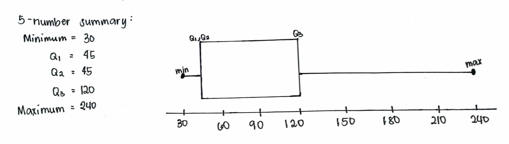

|
Qualitative Variables1. Hardest SubjectMathematics is the most challenging subject, accounting for the largest percentage, followed by Integrated Science, Social Science, Filipino, and Computer Science, with English being the least difficult subject for the surveyed students. This pie chart displays the percentages representing the levels of difficulty for various subjects according to students. These percentages are as follows: Math at 38%, Integrated Science at 25%, Social Science at 19%, Filipino at 13%, Computer Science at 4%, and English at just 1%. |
2. Preferred Studying Method
The students we surveyed prefer studying alone the most. I think it is because it allows them to concentrate on what they are doing. It is followed by Group Study, Online Resources and Tutoring. The bar graph shows the study preferences of pupils, with Self-study being the top choice, followed by Group Study, and Online Resources and Tutoring. It emphasizes Self-study as the most favored approach in this data.
|  | Quantitative Variables1. Study DurationThe histogram here is a positively skewed distribution, or “skewed to the right”. We can say that this is skewed to the right as the tail extends to the right. This also means that the value of the mean (average) is greater than the median (middle value). As for the box and whisker plot, the right whisker, the one extending from Q3 to maximum, is longer than the left whisker, the one extending from Q1 to minimum, and this indicates that the data is positively skewed. Moreover, our IQR is 75, meaning that 50% of the data falls within the range of 45 to 120. Lastly, there are no outliers observed based on the commonly used criterion of 1.5 times the IQR. |
2. Sleep Duration
As for the sleep duration, The distribution of the values in this histogram is expected to resemble a bell shaped or symmetrical because the average or the mean is 360.9 which is quite close to the value of the median which is 360. The distribution might be slightly skewed to the right with a mean that is just about the median — 360.9 as compared to 360. The box plot appears to be approximately symmetrical since the median is close to the mean (360.9). The IQR is 120, indicating the range of the middle 50% of the data. Lastly, upon calculating the potential outliers using the IQR method, the result says that there is no outliers.
Conclusion...
The analysis presents interesting findings from both qualitative and quantitative data. Qualitatively, Mathematics and self-study are considered the hardest subjects and study methods, followed by Sciences and group studies. Filipino surprisingly ranks fourth as the hardest subject, while English and Tutoring rank low. The study suggests that self-study habits develop early due to a lack of resources or most of the time it is more efficient and effective to study alone.
Quantitatively, most respondents study for their hardest subject for less than an hour, with only a few dedicating up to 4 hours. Sleep duration analysis reveals that most students get 4 to 6 hours of sleep, which is less than recommended.
Possible problems in the analysis include a limited sample and potential variable improvements. All four variables (hardest subject, study duration, sleep duration, and study method) could be interconnected for future research. There is a need to explore how these variables affect each other, the impact of decision-making on study time, and the role of school guidance in study methods. Allowing respondents to edit their answers could lead to more genuine results.
Recommendations for future research include studying the interconnections between variables, incorporating more perspectives by involving different grade levels, and seeking solutions to improve student performance without compromising essential aspects of life, such as sleep and fitness activities. The analysis has the potential to shed light on high school students' work ethics, lifestyle improvements, and inspire further research beyond the current scope.